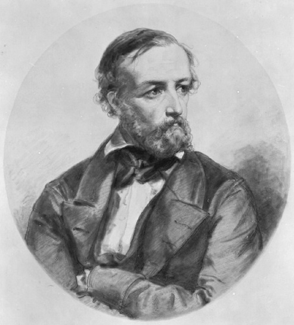

Завдання 2: Мат. аналіз
Перше: З теми оберіть 5 термінів(теорема, впастивість тощо) та сформуйте з
них невпорядкований список
Портрети згаданих математиків (Діріхле та Абеля):

Впорядкований список з вкладеним списком в нього:
Перейти до форматованих елементів